# Руководство по разработке плагинов
# Введение
Плагин CLI — это npm-пакет, который может добавлять дополнительные возможности в проект с помощью Vue CLI. Эти функции могут включать в себя:
- изменение конфигурации webpack проекта — например, можно добавить новое правило для поддержки файлов определённых расширений, если плагин должен работать с ними. Например,
@vue/cli-plugin-typescriptдобавляет такое правило для работы с файлами.tsи.tsx; - добавление новых команд vue-cli-service — например,
@vue/cli-plugin-unit-jestдобавляет новую командуtest:unit, которая позволяет разработчику запускать модульные тесты; - расширение файла
package.json— полезная опция, когда плагину для работы требуются новые зависимости и необходимо добавить их в раздел зависимостей проекта; - создание новых и/или изменение существующих файлов в проекте. Иногда полезно создать файл с примером компонента или изменить основной файл для добавления новых импортов;
- предоставление пользователю возможности выбора требуемых опций — например, можно уточнить необходимость создания примера компонента, упомянутого выше.
Совет
Не злоупотребляйте плагинами vue-cli! При необходимости просто добавить какую-то новую зависимость в проект, например Lodash — лучше сделать это вручную, через npm, чем создавать специальный плагин для этого.
Плагин CLI всегда должен содержать плагин для сервиса в качестве своего основного экспорта, и может опционально содержать генератор, файл интерактивных подсказок и интеграцию с Vue UI.
Как npm-пакет, плагин CLI должен иметь файл package.json. Также рекомендуется, чтобы у плагина было описание в файле README.md, чтобы помочь другим найти ваш плагин в npm.
Типичная структура плагина CLI выглядит следующим образом:
.
├── README.md
├── generator.js # генератор (опционально)
├── index.js # плагин для сервиса
├── package.json
├── prompts.js # файл интерактивных подсказок (опционально)
└── ui.js # интеграция с Vue UI (опционально)
# Именование и обнаруживаемость в поиске
Чтобы плагин CLI мог использоваться в проекте Vue CLI, он должен соответствовать определённому соглашению по именованию vue-cli-plugin-<name> или @scope/vue-cli-plugin-<name>. Такой подход позволяет вашему плагину быть:
- Обнаруживаемым
@vue/cli-service; - Обнаруживаемым другими разработчиками при поиске;
- Устанавливаемым с помощью команд
vue add <name>илиvue invoke <name>.
Предупреждение
Убедитесь в правильности указанного имени плагина, иначе его невозможно будет установить через команду vue add или найти с помощью поиска плагинов в Vue UI!
Для лучшей обнаруживаемости при поиске плагина пользователем, укажите ключевые слова, описывающие плагин, в поле description в его файле package.json.
Например:
{
"name": "vue-cli-plugin-apollo",
"version": "0.7.7",
"description": "vue-cli plugin to add Apollo and GraphQL"
}
Для отображения кнопки «More info» возле описания плагина нужно указать URL-адрес веб-сайта плагина или его репозитория в полях homepage или repository:
{
"repository": {
"type": "git",
"url": "git+https://github.com/Akryum/vue-cli-plugin-apollo.git"
},
"homepage": "https://github.com/Akryum/vue-cli-plugin-apollo#readme"
}

# Генератор
Генератор — это часть плагина CLI, которая обычно используется если требуется расширить пакет новыми зависимостями, создать новые файлы в проекте или изменить существующие.
В структуре плагина CLI генератор должен располагаться в файле generator.js или generator/index.js. Он будет вызываться в двух случаях:
При первоначальном создании проекта, если подключаемый плагин CLI необходим в рамках выбранного пресета настроек создания проекта.
При установке плагина в созданном проекте командой
vue addилиvue invoke.
Генератор должен экспортировать функцию, которая принимает три аргумента:
Экземпляр GeneratorAPI;
Настройки генератора для плагина. Эти настройки разрешаются с помощью интерактивных подсказок во время фазы создания проекта или загружаются из сохранённого пресета в
~/.vuerc. Например, если сохранённый файл~/.vuercвыглядит так:{ "presets" : { "foo": { "plugins": { "@vue/cli-plugin-foo": { "option": "bar" } } } } }То когда пользователь создаёт проект, используя пресет
foo, генератор@vue/cli-plugin-fooполучит{ option: 'bar' }вторым аргументом.Для сторонних плагинов настройки разрешаются из интерактивных подсказок или аргументов командной строки, когда пользователь вызывает
vue invoke(см. интерактивные подсказки).Всё содержимое пресета (
presets.foo) передаётся третьим аргументом.
# Создание новых шаблонов
Генератор при вызове команды api.render('./template') будет создавать файлы из шаблонов в каталоге ./template (путь разрешается относительно файла генератора) с помощью EJS.
Представим, что разрабатываем плагин vue-cli-auto-routing и хотим внести следующие изменения в проект при вызове генератора:
- создать каталог
layoutsс файлом шаблона страниц по умолчанию; - создать каталог
pagesсо страницамиaboutиhome; - добавить файл
router.jsв каталогеsrc
Для создания такой структуры нужно сначала повторить её внутри каталога generator/template:
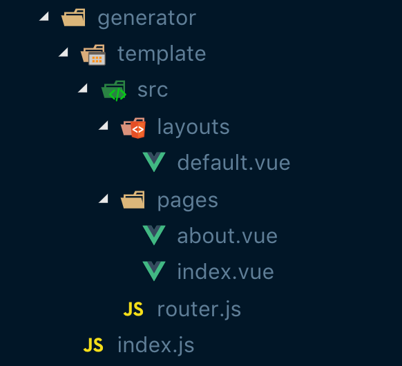
После создания необходимо добавить вызов api.render в файле generator/index.js:
module.exports = api => {
api.render('./template')
}
# Изменение существующих шаблонов
Кроме того, можно унаследовать или заменить части существующего шаблона файла (даже из другого пакета) с помощью YAML front-matter:
---
extend: '@vue/cli-service/generator/template/src/App.vue'
replace: !!js/regexp /<script>[^]*?<\/script>/
---
<script>
export default {
// Скрипт по умолчанию который заменится другим
}
</script>
Также есть возможность заменять сразу несколько мест в файле одновременно, для этого потребуется обернуть заменяющие строки в блоки <%# REPLACE %> и <%# END_REPLACE %>:
---
extend: '@vue/cli-service/generator/template/src/App.vue'
replace:
- !!js/regexp /Добро пожаловать в приложение Vue\.js/
- !!js/regexp /<script>[^]*?<\/script>/
---
<%# REPLACE %>
Сообщение с приветствием которое заменим
<%# END_REPLACE %>
<%# REPLACE %>
<script>
export default {
// Скрипт по умолчанию который заменится другим
}
</script>
<%# END_REPLACE %>
# Ограничения по именованию файлов
При необходимости создания шаблона файла, имя которого начинается с точки (например, .env), нужно следовать определённому соглашению об именовании, поскольку при публикации плагина в npm такие файлы игнорируются:
# Шаблон файла должен использовать символ подчёркивания вместо точки:
/generator/template/_env
# При вызове api.render('./template') в каталоге проекта он будет сгенерирован как:
/generator/template/.env
Следовательно, также потребуется придерживаться определённого соглашения об именовании, если потребуется сгенерировать файл, имя которого начинается с подчёркивания:
# Шаблоны таких файлов должны использовать 2 символа подчёркивания вместо одного:
/generator/template/__variables.scss
# При вызове api.render('./template') в каталоге проекта он будет сгенерирован как:
/generator/template/_variables.scss
# Расширение пакета
Если нужно добавить новую зависимость в проект, создать npm-задачу или изменить package.json любым другим способом, можно использовать метод API extendPackage.
// generator/index.js
module.exports = api => {
api.extendPackage({
dependencies: {
'vue-router-layout': '^0.1.2'
}
})
}
В примере выше добавляется одна зависимость: vue-router-layout. При вызове плагина этот npm-пакет будет установлен и зависимость добавлена в пользовательский файл package.json.
Этим же методом API можно добавлять npm-задачи в проект. Для этого нужно указать имя задачи и команду, которая будет выполняться, для добавления в секцию scripts файла package.json:
// generator/index.js
module.exports = api => {
api.extendPackage({
scripts: {
greet: 'vue-cli-service greet'
}
})
}
В примере выше добавляется новая задача greet, которая будет запускать специальную команду сервиса vue-cli, создание которой подробнее описано в разделе плагина для сервиса.
# Изменение основного файла
С помощью методов генератора можно вносить изменения и в файлы проекта. Наиболее распространённым случаем является изменение основного файла main.js или main.ts: добавление новых импортов, вызовы новых Vue.use() и т.д.
Рассмотрим случай, когда файл router.js создан с помощью генерации новых шаблонов и теперь требуется импортировать этот маршрутизатор в основной файл. Для этого используем два метода API генератора: entryFile вернёт основной файл проекта (main.js или main.ts), а injectImports предоставит возможность добавить новые импорты в этот файл:
// generator/index.js
api.injectImports(api.entryFile, `import router from './router'`)
Теперь, когда маршрутизатор импортирован, можно внедрить его в экземпляр Vue в основном файле. Используем для этого хук afterInvoke, который вызывается после записи файлов на диск.
Сначала нужно прочитать содержимое основного файла с помощью модуля Node fs (который предоставляет API для взаимодействия с файловой системой) и разделить содержимое на строки:
// generator/index.js
module.exports.hooks = (api) => {
api.afterInvoke(() => {
const fs = require('fs')
const contentMain = fs.readFileSync(api.entryFile, { encoding: 'utf-8' })
const lines = contentMain.split(/\r?\n/g)
})
}
Затем находим строку, содержащую слово render (это обычно будет часть экземпляра Vue), и добавляем router в качестве следующей строки:
// generator/index.js
module.exports.hooks = (api) => {
api.afterInvoke(() => {
const fs = require('fs')
const contentMain = fs.readFileSync(api.entryFile, { encoding: 'utf-8' })
const lines = contentMain.split(/\r?\n/g)
const renderIndex = lines.findIndex(line => line.match(/render/))
lines[renderIndex] += `\n router,`
})
}
Наконец, сохраняем содержимое обратно в основной файл:
// generator/index.js
module.exports.hooks = (api) => {
api.afterInvoke(() => {
const { EOL } = require('os')
const fs = require('fs')
const contentMain = fs.readFileSync(api.entryFile, { encoding: 'utf-8' })
const lines = contentMain.split(/\r?\n/g)
const renderIndex = lines.findIndex(line => line.match(/render/))
lines[renderIndex] += `${EOL} router,`
fs.writeFileSync(api.entryFile, lines.join(EOL), { encoding: 'utf-8' })
})
}
# Плагин для сервиса
Плагин для сервиса позволяет вносить изменения в конфигурацию webpack, создавать новые команды vue-cli или изменять существующие (такие как serve и build).
Плагин для сервиса автоматически загружается при создании экземпляра сервиса — т.е. при каждом вызове команды vue-cli-service внутри проекта. Он располагается в файле index.js в корневом каталоге плагина CLI.
Плагин для сервиса должен экспортировать функцию, которая принимает два аргумента:
Экземпляр PluginAPI
Объект, содержащий локальные настройки проекта, указанные в файле
vue.config.jsили в поле"vue"файлаpackage.json.
Минимально необходимый код файла плагина для сервиса приведён ниже:
module.exports = () => {}
# Изменение конфигурации webpack
API позволяет плагину для сервиса расширять/изменять внутреннюю конфигурацию webpack для различных окружений. Например, модифицируем конфигурацию webpack с помощью webpack-chain для добавления плагина vue-auto-routing с заданными параметрами:
const VueAutoRoutingPlugin = require('vue-auto-routing/lib/webpack-plugin')
module.exports = (api, options) => {
api.chainWebpack(webpackConfig => {
webpackConfig
.plugin('vue-auto-routing')
.use(VueAutoRoutingPlugin, [
{
pages: 'src/pages',
nested: true
}
])
})
}
Также можно использовать метод configureWebpack для изменении конфигурации webpack или возврата объекта, который будет объединяться с конфигурацией с помощью webpack-merge.
# Добавление новой команды в cli-service
С помощью плагина для сервиса можно зарегистрировать новую команду в cli-service в дополнение к стандартным (т.е. serve и build). Для этого можно использовать метод API registerCommand.
Пример создания простой новой команды, которая выводит приветствие в консоли разработчика:
api.registerCommand(
'greet',
{
description: 'Выводит приветствие в консоли',
usage: 'vue-cli-service greet'
},
() => {
console.log(`👋 Привет`)
}
)
В этом примере мы задаём имя команды ('greet'), объект настроек с опциями description и usage, а также функцию, которая выполняется при запуске команды vue-cli-service greet.
Совет
Можно также добавить новую команду в список npm-задач проекта в файле package.json с помощью генератора.
При запуске новой команды в проекте с установленным плагином появится сообщение в консоли:
$ vue-cli-service greet
👋 Привет!
Можно указать список доступных опций для новой команды. Добавим опцию --name и изменим функцию для вывода этого имени, если оно было указано.
api.registerCommand(
'greet',
{
description: 'Выводит приветствие в консоль',
usage: 'vue-cli-service greet [options]',
options: { '--name': 'определяет имя для приветствия' }
},
args => {
if (args.name) {
console.log(`👋 Привет, ${args.name}!`);
} else {
console.log(`👋 Привет!`);
}
}
);
Теперь при запуске команды greet с указанной опцией --name, это имя будет выводиться вместе с сообщением в консоли:
$ vue-cli-service greet --name 'Джон'
👋 Привет, Джон!
# Изменение существующей команды в cli-service
Если необходимо изменить существующую команду cli-service, сначала нужно получить её через api.service.commands и затем внести некоторые изменения. К примеру, выведем сообщение в консоли с номером порта, на котором запущено приложение:
const { serve } = api.service.commands
const serveFn = serve.fn
serve.fn = (...args) => {
return serveFn(...args).then(res => {
if (res && res.url) {
console.log(`Проект запущен по адресу ${res.url}`)
}
})
}
В примере выше сначала получаем команду serve из списка существующих команд; затем изменяем её fn-часть (fn — это третий параметр, передаваемый при создании новой команды; он определяет функцию, запускаемую при выполнении команды). После внесения модификаций сообщение в консоли будет выводиться после успешного выполнения команды serve.
# Определение режима работы команды
Если команда, зарегистрированная плагином, должна запускаться в определённом режиме, плагин должен определять его через module.exports.defaultModes в виде { [commandName]: mode }:
module.exports = api => {
api.registerCommand('build', () => {
// ...
})
}
module.exports.defaultModes = {
build: 'production'
}
Это связано с тем, что ожидаемый режим для работы команды должен быть известен до загрузки переменных окружения, что произойдёт перед загрузкой пользовательских настроек / применением плагинов.
# Интерактивные подсказки
Интерактивные подсказки предназначены для обработки пользовательского выбора при создании нового проекта или добавлении нового плагина в существующий проект. Вся логика интерактивных подсказок расположена в файле prompts.js. Сами подсказки реализованы с помощью пакета inquirer под капотом.
При инициализации плагина пользователем командой vue invoke, если плагин содержит prompts.js в своем корневом каталоге, он будет использован во время вызова. Файл должен экспортировать массив вопросов, которые затем будут обработаны Inquirer.js.
Необходимо экспортировать сам массив вопросов или функцию, которая возвращает его.
Например, экспорт непосредственно массива вопросов:
// prompts.js
module.exports = [
{
type: 'input',
name: 'locale',
message: 'Используемый язык для локализации проекта.',
validate: input => !!input,
default: 'en'
},
// ...
]
Или экспорт функции, которая возвращает массив вопросов:
// prompts.js
// в качестве аргумента функции передаётся `package.json` проекта
module.exports = pkg => {
const prompts = [
{
type: 'input',
name: 'locale',
message: 'Используемый язык для локализации проекта.',
validate: input => !!input,
default: 'en'
}
]
// динамическое добавление интерактивной подсказки
if ('@vue/cli-plugin-eslint' in (pkg.devDependencies || {})) {
prompts.push({
type: 'confirm',
name: 'useESLintPluginVueI18n',
message: 'Использовать ESLint-плагин для Vue I18n?'
})
}
return prompts
}
Итоговый объект с ответами будет передаваться в генератор плагина в качестве настроек.
Кроме того, пользователь может пропустить этап в интерактивными подсказками и напрямую инициализировать плагин, передав опции через командную строку, например:
vue invoke my-plugin --mode awesome
Интерактивные подсказки могут быть различных типов, но наиболее широко в CLI применяются checkbox и confirm. Добавим интерактивную подсказку confirm и используем её в генераторе плагина чтобы создавать по условию новый файл из шаблона.
// prompts.js
module.exports = [
{
name: `addExampleRoutes`,
type: 'confirm',
message: 'Добавить примеры маршрутов?',
default: false
}
]
При вызове плагина пользователю будет предложено ответить на вопрос о добавлении примеров маршрутов с ответом по умолчанию «Нет».
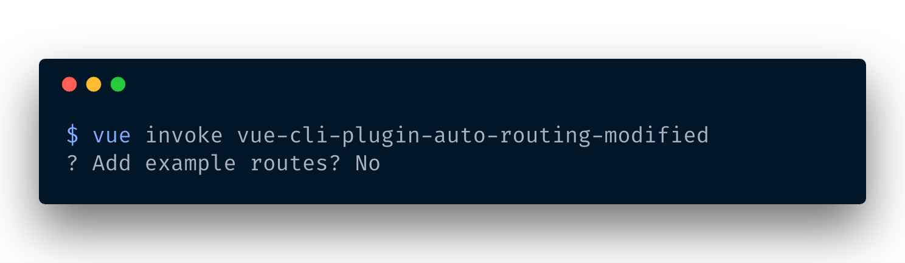
Если необходимо использовать результат выбора пользователя в генераторе, ответ будет доступен по имени интерактивной подсказки. Теперь можно модифицировать generator/index.js так:
if (options.addExampleRoutes) {
api.render('./template', {
...options
})
}
Шаблон будет генерироваться только если пользователь согласился создать примеры маршрутов.
# Локальная установка плагина
При разработке плагина может потребоваться протестировать его и проверить локально как он работает на проекте с помощью Vue CLI. Можно использовать существующий проект или создать новый в целях тестирования:
vue create test-app
Для добавления плагина выполняем следующую команду в корневом каталоге проекта:
npm install --save-dev file:/full/path/to/your/plugin
vue invoke <your-plugin-name>
Вызов этих команд необходимо повторять каждый раз при внесении изменений в плагин.
Другой способ добавления плагина — воспользоваться возможностями Vue UI. Выполните команду:
vue ui
Пользовательский интерфейс откроется в браузере по адресу localhost:8000. Перейдите на вкладку Vue Project Manager:
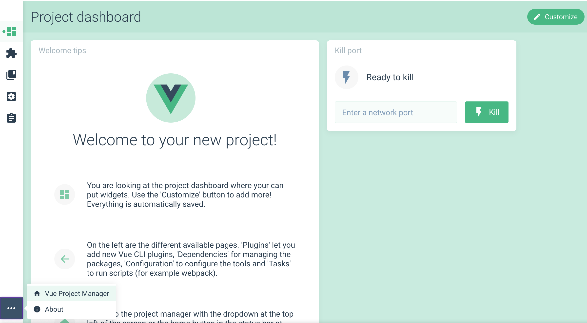
И найдите в списке название тестового проекта:
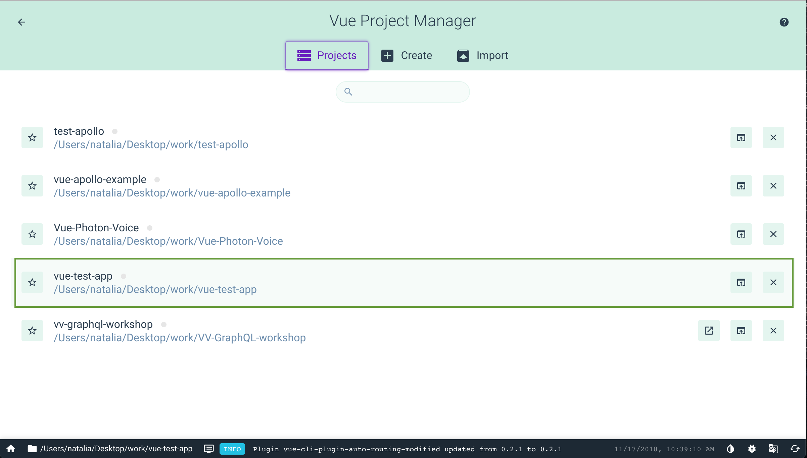
Нажмите на название приложения, перейдите на вкладку плагинов (значок пазла) и затем нажмите кнопку Add new plugin (Добавить новый плагин) в правом верхнем углу. На новой странице будет отображён список плагинов Vue CLI, доступных через npm. В нижней части страницы будет кнопка Browse local plugin (Выбор локального плагина):
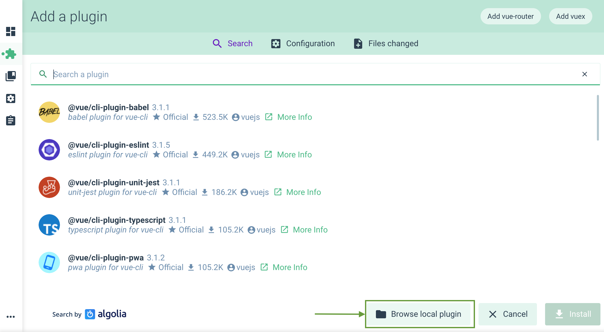
В окне выбора находим тестируемый плагин и добавляем в проект. После этого он станет виден в списке плагинов, а применить изменения к плагину можно просто нажав на иконку обновления:
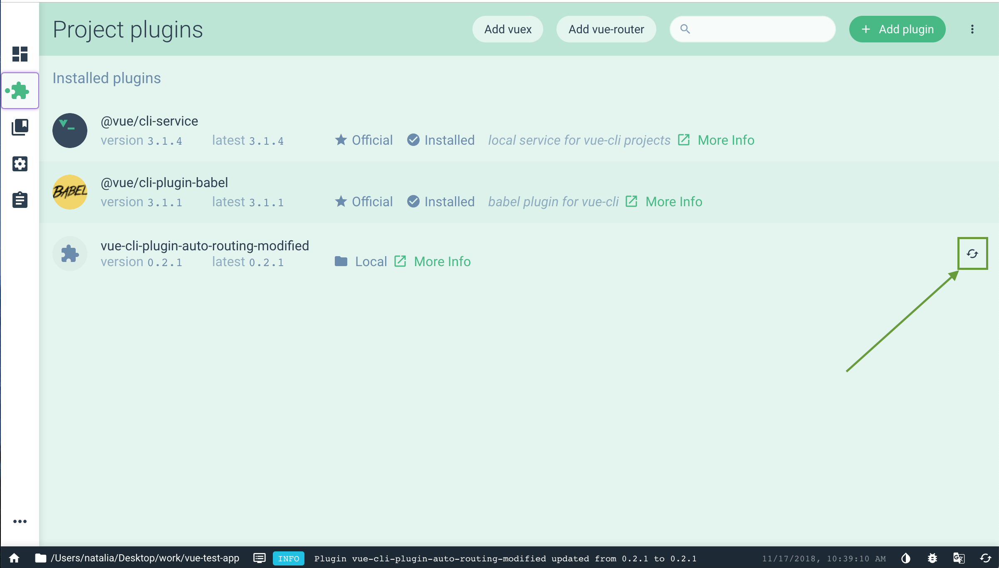
# Интеграция с UI
Vue CLI имеет отличный UI с помощью которого пользователь может разворачивать и управлять проектом в удобном графическом интерфейсе. Плагины Vue CLI могут интегрироваться в этот интерфейс. Также UI предоставляет дополнительные возможности для плагинов CLI:
- можно напрямую из UI запускать npm-задачи, в том числе и специфичные для плагинов;
- можно отображать экран с настройками конфигурации плагина. Например, vue-cli-plugin-apollo предоставляет отдельный экран для конфигурации сервера Apollo:
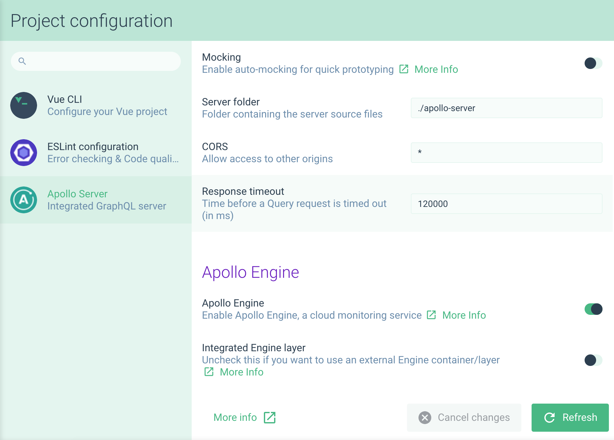
- можно отображать интерактивные подсказки при создании проекта
- можно добавлять локализации плагина при необходимости поддержки нескольких языков
- можно сделать плагин обнаруживаемым при поиске в Vue UI
Вся логика, связанная с Vue UI, должна располагаться в файле ui.js в корневом каталоге или в ui/index.js. Файл должен экспортировать функцию, которая принимает аргументом объект api:
module.exports = api => {
// Используем API здесь...
}
# Отображение задачи в UI
Плагин Vue CLI позволяет не только добавлять новые npm-задачи в проект с помощью генератора, но и создавать новые экраны для использования в Vue UI. Это полезно, если хочется запускать задачу сразу из пользовательского интерфейса и видеть результаты её выполнения.
Добавим отображение задачи greet, которую создавали с помощью генератора. Список задач определяется из поля scripts файла проекта package.json. Можно «дополнить» задачу дополнительной информацией и хуками с помощью метода api.describeTask:
module.exports = api => {
api.describeTask({
match: /greet/,
description: 'Выводит приветствие в консоль',
link: 'https://cli.vuejs.org/ru/dev-guide/plugin-dev.html'
})
}
Теперь в обзоре проекта Vue UI можно увидеть, что задача появилась на странице Tasks. Можно увидеть её название, предоставленное описание, иконку ссылки, которая ведёт на указанный URL, а также экран для отображения результатов выполнения задачи:
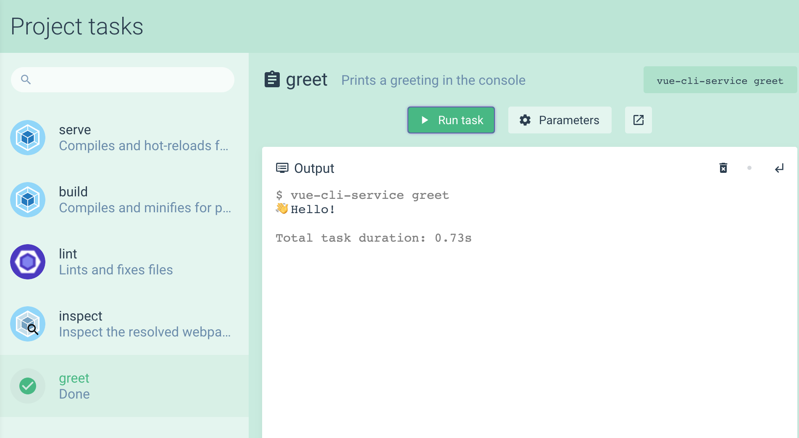
# Отображение экрана конфигурации
Иногда в проекте могут быть пользовательские файлы конфигураций для различных функций или библиотек. С помощью плагина Vue CLI можно отображать конфигурацию в Vue UI, изменять её и сохранять (сохранение изменит соответствующий конфигурационный файл в проекте). По умолчанию в проекте Vue CLI имеется только главный экран конфигурации с настройками из vue.config.js. Если добавить ESLint в проект, то появится также экран конфигурации ESLint:
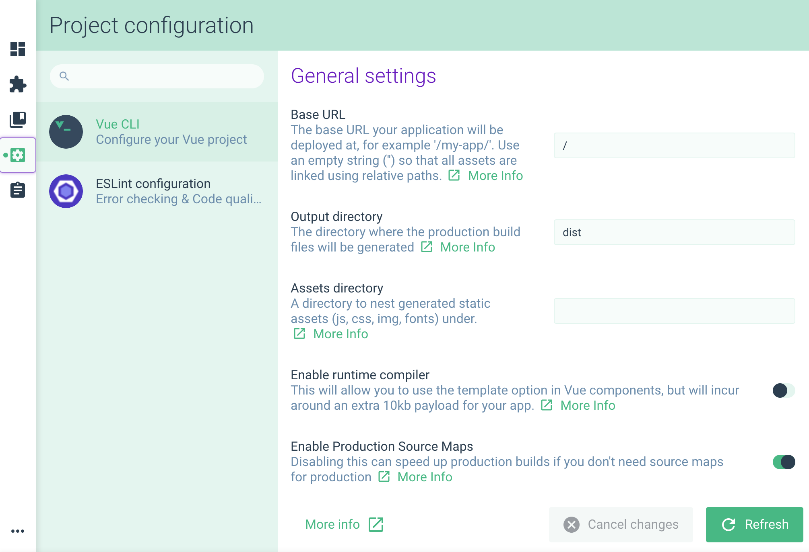
Давайте создадим экран конфигурации для плагина. Прежде всего, после добавления плагина в существующий проект, должен быть файл с пользовательской конфигурацией. Это означает, что требуется добавить этот файл в каталог template для шага создания новых шаблонов.
По умолчанию пользовательский интерфейс конфигурации может читать и записывать файлы следующих форматов: json, yaml, js, package. Назовём новый файл myConfig.js и поместим его в корне каталога template:
.
└── generator
├── index.js
└── template
├── myConfig.js
└── src
├── layouts
├── pages
└── router.js
Теперь необходимо добавить в этот файл какую-то актуальную конфигурацию:
// myConfig.js
module.exports = {
color: 'black'
}
После вызова плагина файл myConfig.js будет сгенерирован в корневом каталоге проекта. Теперь добавим новый экран конфигурации с помощью метода api.describeConfig в файле ui.js:
Сначала нужно передать некоторую информацию:
// ui.js
api.describeConfig({
// Уникальный ID для конфигурации
id: 'org.ktsn.vue-auto-routing.config',
// Отображаемое имя
name: 'Настройка приветствия',
// Описание, отображаемое под именем
description: 'Можно настроить цвет текста приветствия',
// Ссылка «More info»
link: 'https://github.com/ktsn/vue-cli-plugin-auto-routing#readme'
})
Предупреждение
Убедитесь в точности пространства имён для id, так как он должен быть уникальным для всех плагинов. Рекомендуем использовать обратную нотацию записи доменного имени
# Логотип конфигурации
Можно выбрать значок для конфигурации. Это может быть код значка Material или пользовательское изображение (см. публичные статические файлы).
// ui.js
api.describeConfig({
/* ... */
// Значок конфигурации
icon: 'color_lens'
})
Если значок не указан, то будет использоваться логотип плагина, если таковой есть (см. Логотип).
# Файлы конфигурации
Теперь нужно предоставить файл конфигурации для UI: таким образом можно будет читать его содержимое и сохранять изменения обратно. Для этого указываем имя конфигурационного файла, его формат и указываем путь к нему:
api.describeConfig({
// другие свойства конфигурации
files: {
myConfig: {
js: ['myConfig.js']
}
}
})
Можно указать больше одного файла. Например, если есть myConfig.json, можно определить его в свойстве json: ['myConfig.json']. Порядок здесь важен: первое имя файла в списке будет использоваться при создании файла конфигурации, если его не существует.
# Отображение интерактивных подсказок конфигурации
Отобразим поле ввода для отображения свойства с цветом на экране конфигурации. Для этого используем хук onRead, который вернёт список интерактивных подсказок для отображения:
api.describeConfig({
// другие свойства конфигурации
onRead: ({ data }) => ({
prompts: [
{
name: `color`,
type: 'input',
message: 'Цвет сообщения с приветствием',
value: 'white'
}
]
})
})
Этот пример добавляет интерактивную подсказку в виде поля с указанным значением white. Вот как будет выглядеть экран конфигурации со всеми приведёнными выше настройками:
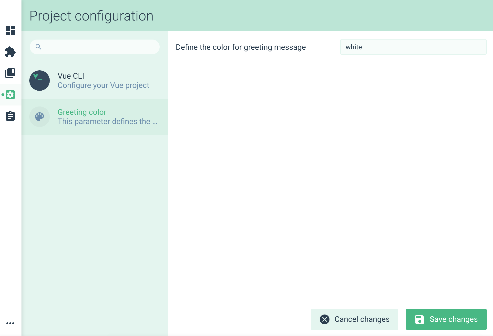
Заменим теперь статическое значение white на свойство из конфигурационного файла. В хуке onRead объект data содержит JSON с результатом каждого файла конфигурации. В нашем случае содержание myConfig.js такое:
// myConfig.js
module.exports = {
color: 'black'
}
Поэтому объект data будет таким:
{
// Файл
myConfig: {
// Данные файла
color: 'black'
}
}
Легко увидеть, что необходимое нам свойство data.myConfig.color. Обновим хук onRead:
// ui.js
onRead: ({ data }) => ({
prompts: [
{
name: `color`,
type: 'input',
message: 'Цвет сообщения с приветствием',
value: data.myConfig && data.myConfig.color
}
]
}),
Совет
Обратите внимание, что myConfig может быть неопределён, если конфигурационного файла не существует на момент загрузки экрана конфигурации.
Как можно увидеть на экране конфигурации значение white заменится на black.
Также можно предоставить значение по умолчанию, если конфигурационный файл отсутствует:
// ui.js
onRead: ({ data }) => ({
prompts: [
{
name: `color`,
type: 'input',
message: 'Цвет сообщения с приветствием',
value: data.myConfig && data.myConfig.color,
default: 'black',
}
]
}),
# Сохранение конфигурации после изменений
Пока мы лишь считали содержимое myConfig.js и использовали его на экране конфигурации. Теперь попробуем сохранить все изменения в файл. Это можно сделать с помощью хука onWrite:
// ui.js
api.describeConfig({
/* ... */
onWrite: ({ prompts, api }) => {
// ...
}
})
Хук onWrite принимает множество аргументов, но нам нужны только два из них: prompts и api. В первом текущие объекты интерактивных подсказок — получим id интерактивной подсказки и ответ для этого id. Для получения ответа воспользуемся методом async getAnswer() из api:
// ui.js
async onWrite({ api, prompts }) {
const result = {}
for (const prompt of prompts) {
result[`${prompt.id}`] = await api.getAnswer(prompt.id)
}
api.setData('myConfig', result)
}
Теперь, если на экране конфигурации изменить значение цвета в поле ввода с black на red и нажать кнопку Save the changes, то содержимое файла myConfig.js также обновится:
// myConfig.js
module.exports = {
color: 'red'
}
# Отображение интерактивных подсказок
При желании также можно отображать интерактивные подсказки в Vue UI. При установке плагина через UI интерактивные подсказки будут отображаться на шаге вызова плагина.
Объект подсказки можно расширять дополнительными свойствами. Они опциональны и используются только в UI:
// prompts.js
module.exports = [
{
// основные свойства интерактивных подсказок
name: `addExampleRoutes`,
type: 'confirm',
message: 'Добавить примеры маршрутов?',
default: false,
// свойства интерактивных подсказок для UI
group: 'Настоятельно рекомендуется',
description: 'Добавить примеры страниц, шаблонов и конфигурацию маршрутизатора',
link: 'https://github.com/ktsn/vue-cli-plugin-auto-routing/#vue-cli-plugin-auto-routing'
}
]
В результате при вызове плагина появится такой экран:
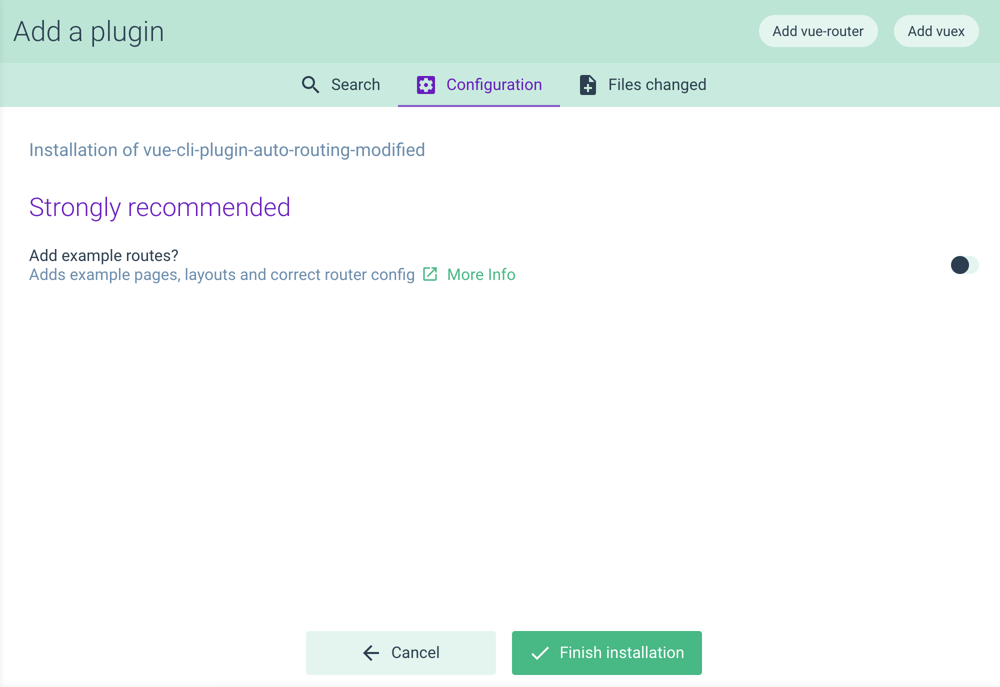
# Логотип
Можно поместить файл logo.png в корне каталога, который будет публиковаться в npm. Тогда его можно будет увидеть в нескольких местах:
- При поиске плагина для установки
- В списке установленных плагинов
- В списке конфигураций (по умолчанию)
- В списке дополненных задач (по умолчанию)

Логотип должен быть квадратным изображением без прозрачности (в идеале 84x84).
# Публикация плагина в npm
Для публикации плагина необходимо быть зарегистрированным на npmjs.com и глобально установить npm. Если публикуете ваш первый npm-модуль, то сначала запустите команду:
npm login
Введите имя пользователя и пароль. Это позволит сохранить учётные данные, чтобы не приходилось вводить их при каждой публикации.
Совет
Перед публикацией плагина убедитесь, что выбрали правильное имя для него! Соглашение по именованию vue-cli-plugin-<name>. Дополнительную информации см. в разделе Именование и обнаруживаемость в поиске.
Для публикации плагина перейдите в корневой каталог и выполните команду в терминале:
npm publish
После успешной публикации можно будет добавить ваш плагин в проект, созданный с помощью Vue CLI командой vue add <plugin-name>.